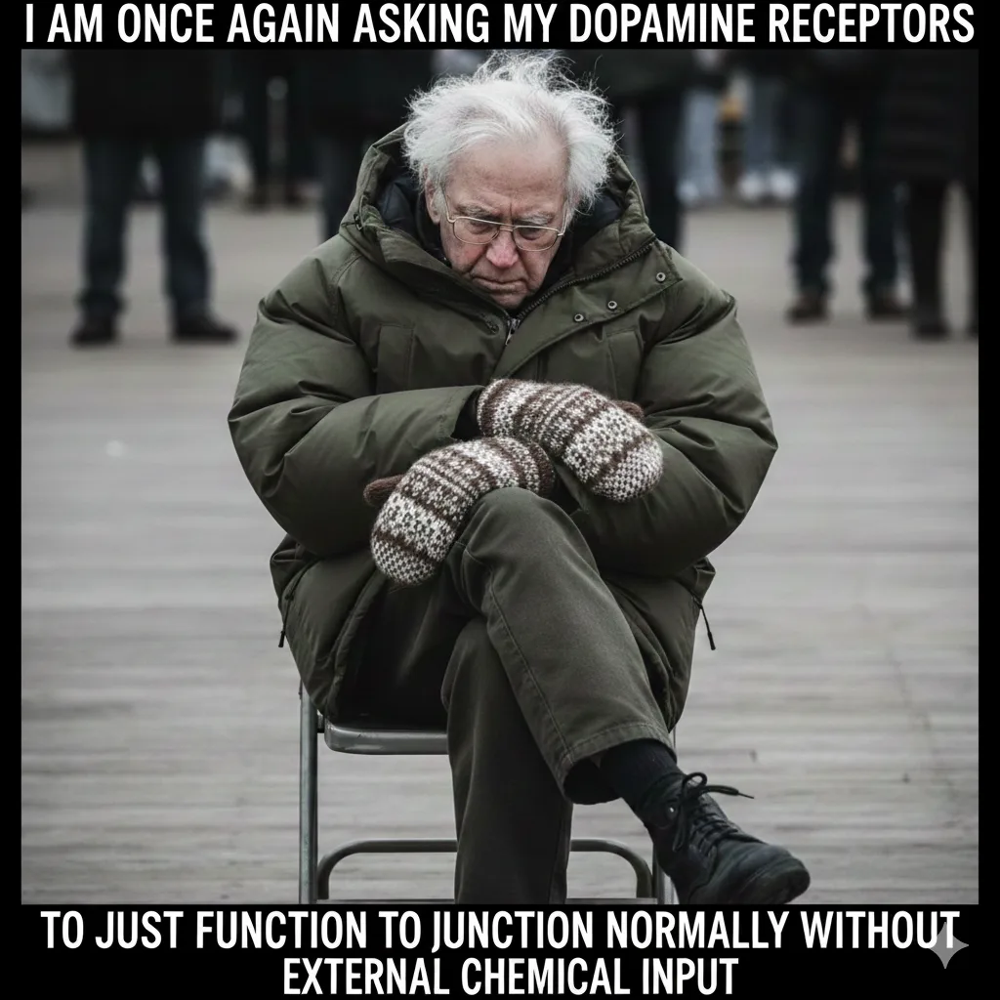
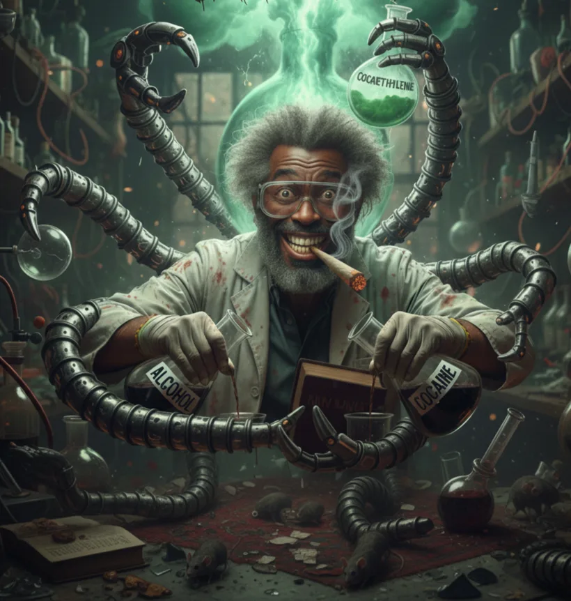
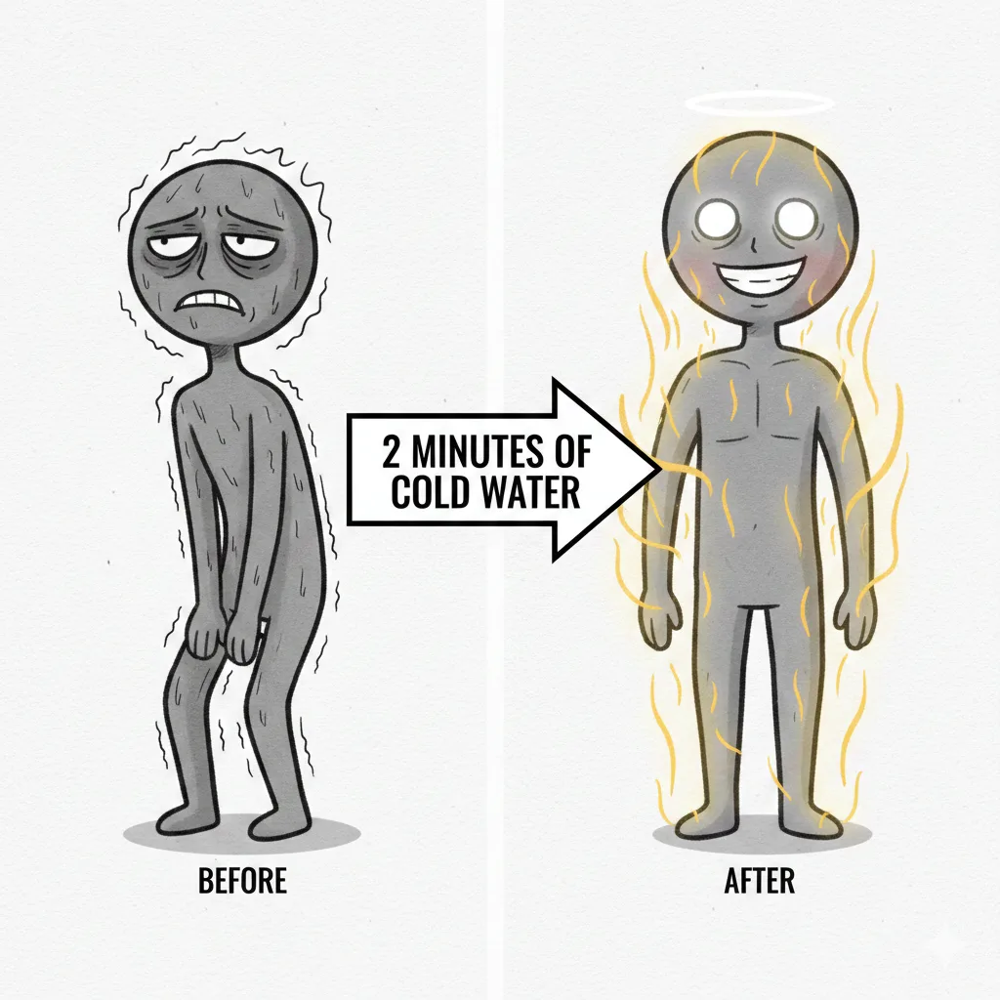
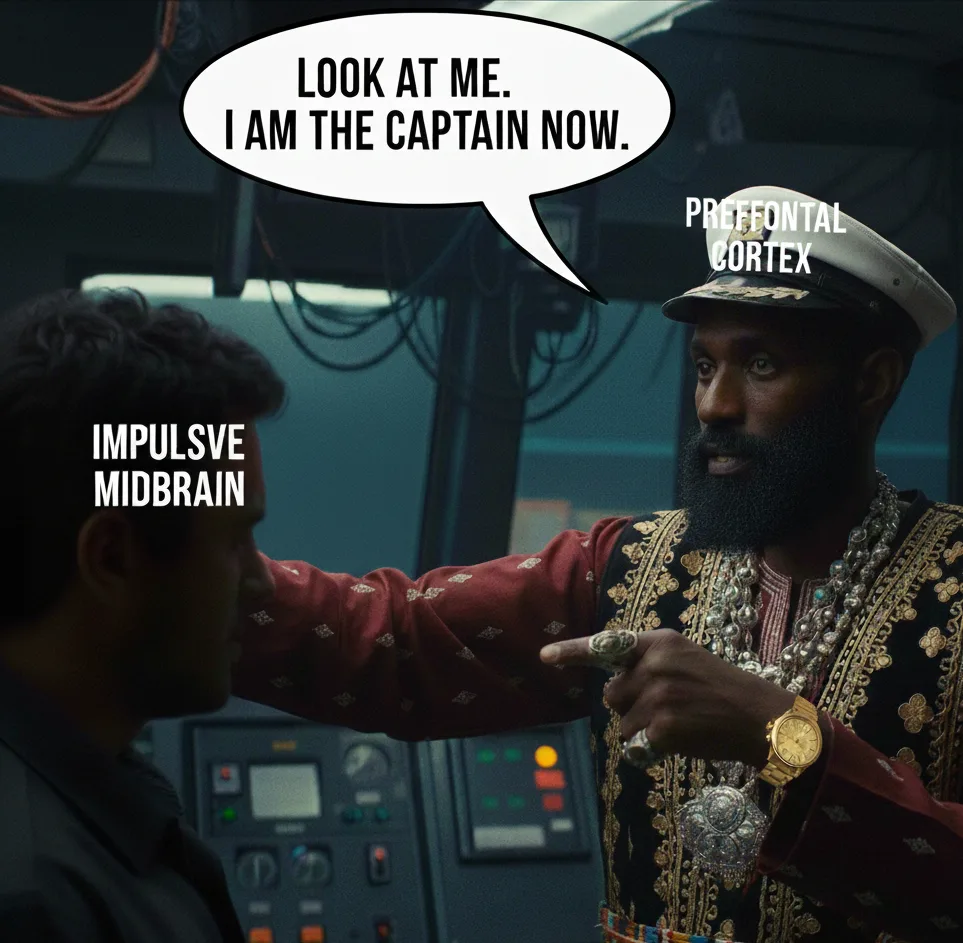
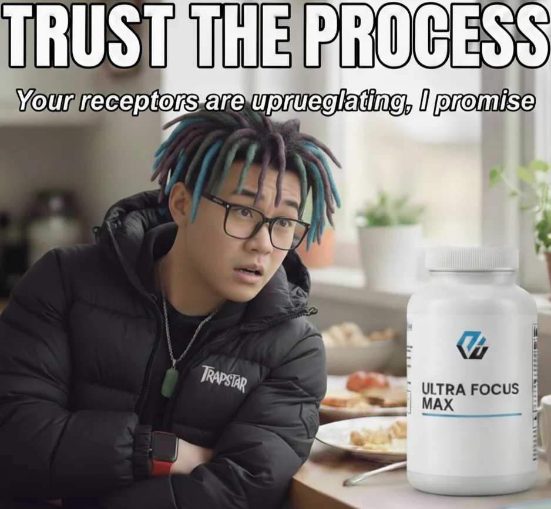

The Grey Sky Detox: A Technical Breakdown for surviving dry Jan in the London Winter
Wag1, it's mid-January and we're damn near halfway through Dry January. If you're still standing, congrats MF, you've made it past the hardest part. If you've already folded, no judgment, but maybe give this a read anyway. Could be useful for next time.

Look, I get it. Outside, it's dark by 4:20 PM, the sky's been the same shade of grey for weeks, and everything feels like it's running on 20% battery. In this environment, the Big Three, weed, alcohol, and the occasional bag, start looking less like vices and more like survival tools. You're not broken for reaching for them. You've just been trying to manually regulate your internal temperature in a city that's permanently set to "miserable."
But here's what I've been thinking about: why's everyone out here playing chemist with our own neurotransmitters? It's not just personal failure or weak willpower or whatever bullshit narrative gets thrown around. There's something systemic going on, man. Endless work hours, financial pressure that makes it impossible to rest, a housing crisis that keeps stress levels permanently elevated, and a culture that glorifies "the grind" while simultaneously selling the substances to cope with it. The bottle, the leaf, the bag, they're not just recreational anymore. They're pressure valves.
And then January rolls around and suddenly everyone's supposed to just... stop? Like the underlying conditions changed? The rent's still due. The job still sucks. The sun still sets at 4 PM. But now we're supposed to white-knuckle it through with nothing but willpower and maybe a gym membership we'll use twice.

Dead that. Too do this properly we need to understand what's actually happening in our systems and arm ourselves with the right tools. This isn't about moral superiority. It's about hitting reset so we can actually feel something again without needing external chemicals to get there.
Let me break down what's happening in your body and how to actually fix it.
Phase 1: Understanding The Combo Effect (AKA Why You Feel Like Shit)
To fix the machine, you gotta understand what's been draining your battery. Most people don't realize they've been running a pharmaceutical cocktail that would make a research chemist nervous.
The Cocaethylene Problem (Coke + Alcohol):
When you mix the bag with drinks, your liver stops filtering and starts manufacturing cocaethylene. This metabolite is way more cardio-toxic than coke alone and has a much longer half-life, meaning it stays in your blood for hours, keeping your heart rate elevated while you're trying to sleep in a freezing room.
That's why Sunday Scaries feel like an actual heart attack, not just anxiety. Your cardiovascular system is literally recovering from sustained stress. This combo is dangerous because the initial high wears off hours before your heart's actually recovered. You think you're fine, but your cardiovascular system disagrees.
The Cross-Fade De-sync (Weed + Alcohol):
Alcohol acts as a vasodilator, opening up your blood vessels and making your lungs absorb THC at an accelerated rate. This creates a spike that your brain compensates for by down regulating your CB1 receptors—basically your joy ports. You're not chilled out, you're chemically suppressed.
And here's the thing—this is why "just smoke weed instead" isn't the miracle solution people think it is, especially when you're still drinking. You're still training your brain to need external input to feel normal. Different drug, same feedback loop.

The Dream Debt:
THC and alcohol both suppress REM sleep. You've been passing out, not sleeping. Your brain's got a massive backlog of emotional data to process—every stressful interaction, every anxious thought, every unresolved feeling from the past few months is sitting there waiting to be sorted through. This reset is what finally lets your brain defragment that hard drive.
The vivid dreams you're about to get aren't random—they're your subconscious doing overtime to catch up on months of neglected emotional processing. It's gonna be weird, but it's necessary.
Phase 2: The Winter Survival Kit (Actual Science, No BS)

So the idea is to not just remove shit from your live, you wanna add things to keep you stable during the reset. Because let's be real: London in January is rough. The lack of sunlight alone messes with dopamine production, and that's before we factor in everything else that makes modern life exhausting.
So here's the arsenal.
1. NAC: The Craving Killer
N-Acetylcysteine is your weapon against the "itch", that background noise that usually leads to relapse. When you stop using stimulants or alcohol, your brain gets flooded with glutamate, an excitatory neurotransmitter that creates what I can only describe as mental static. Everything feels slightly wrong, slightly uncomfortable, slightly incomplete. That's glutamate overflow.
NAC works by modulating the cystine-glutamate antiporter in your nucleus accumbens (your brain's reward center), essentially mopping up that chemical noise before it turns into cravings. It's the difference between "I could use a drink" and "I need a drink right fucking now."
What to Do: Take 1,200mg to 1,800mg daily, split into two doses. Take the first one 30 minutes before your usual trigger window, for most people that's late afternoon when work stress peaks and the sun's already gone down.
Pro tip: NAC tastes like absolute shit, so get capsules, not powder. Trust me on this one.
2. L-Tyrosine: The Dopamine Printer
This is for the Tuesday Blues, that emotional flatline after stimulant use where literally nothing feels rewarding. Not music, not food, not even shit you normally love. Your brain's dopamine production is substrate-depleted, meaning it's out of the amino acid building blocks it needs to manufacture motivation.
L-Tyrosine is that raw material. Without it, your brain's trying to print dopamine with an empty ink cartridge. The printer's working fine, there's just nothing to work with.
What to Do: Take 500mg to 1,000mg on an empty stomach immediately when you wake up. The timing matters here, if you take it with other proteins, they compete for absorption across the blood-brain barrier and you lose most of the benefit.
You'll know it's working when mundane tasks stop feeling like climbing Everest. That's not motivation returning, that's your brain having the raw materials to create motivation again.
3. Light Therapy: The Circadian Anchor
In a London winter, the lack of proper high-intensity blue light means your suprachiasmatic nucleus (your brain's master clock) never triggers a proper cortisol pulse. You're stuck in biological twilight, never fully awake, never fully asleep, just sort of... existing in low power mode.
This is why we reach for stimulants to wake up and depressants to sleep. We're manually doing what sunlight used to do automatically. And it's exhausting.
Light therapy isn't just about mood, though that's a bonus. It's about phase-response curve adjustment, which is a fancy way of saying "teaching your brain what time it actually is."
What to Do: Get a 10,000 Lux SAD lamp. Sit 16-24 inches away from it for 20 minutes before 9 AM. This hits the intrinsically photosensitive retinal ganglion cells in your eyes, which signal your brain to stop making melatonin and start making cortisol and serotonin.
It sets a circadian anchor. You'll have actual clarity during the day and feel genuinely tired by 11 PM instead of that wired-but-exhausted combo that has you scrolling TikTok at 2 AM.
I know this sounds like wellness industry bullshit, but the photobiology here is legit. Our ancestors didn't need this because they were outside during daylight hours. We're in offices under fluorescent lights that don't trigger the right cellular response. We're just compensating for how disconnected we've become from natural light cycles.
4. Cold Showers: The Natural Upper
While stimulants give you a massive dopamine spike followed by a soul-crushing crash, cold exposure provides sustained elevation without the tax. A sudden temperature drop triggers the mammalian dive reflex, a hardwired survival response that dumps norepinephrine and dopamine into your system.
The difference is the decay curve. Stimulants are a rocket launch followed by a crash landing. Cold exposure is a steady climb with a gradual descent. You get the kick without destroying your reward circuitry in the process.
What to Do: End your morning shower with 2 minutes of maximum cold water. The goal isn't to tough it out, it's to control the gasp reflex and maintain steady breathing through the discomfort.
Research shows this can raise dopamine levels by up to 250% for several hours. That's the kick you usually look for in a baggie, but it actually improves cardiovascular function instead of degrading it.
And look, I'm not gonna lie, the first week is fucking miserable. You'll question why you're doing this to yourself. But by week two, you'll understand. It's the closest thing to a natural upper that actually works. Plus there's something almost meditative about voluntarily choosing discomfort in a world that's constantly selling comfort.
5. Magnesium Glycinate: The NMDA Reset
Here's one nobody talks about: chronic alcohol and coke use overstimulates NMDA receptors, which basically fries your nervous system. This shows up as constant low-level anxiety, tension in your jaw, tightness in your shoulders that never quite goes away.
Magnesium glycinate acts as a calcium channel blocker, sitting in those NMDA receptors and preventing them from over-firing. It lowers systemic neuro-inflammation and physically relaxes that tension you've been carrying.
What to Do: Take 400mg of magnesium glycinate 60 minutes before bed. Make sure it's the glycinate form specifically, magnesium oxide is cheap but your body barely absorbs it, so you're just creating expensive piss. Glycinate is highly bioavailable, and the attached glycine provides an additional inhibitory effect on your brain, helping silence those racing thoughts that keep you staring at the ceiling until 3 AM.
This is the supplement that finally lets you "land" properly at night instead of that awful limbo where you're exhausted but can't actually sleep.
The 31-Day System Reboot: What To Expect
Alright, let's talk about the actual timeline, because understanding what's happening week-by-week makes it way easier to push through when shit gets rough.

Week 1: The Purge & Stabilization Phase
Your liver's working overtime to clear cocaethylene and alcohol metabolites from your fat tissue. This is the withdrawal phase, and it's objectively the worst part.
What You'll Feel: Night sweats. Proper drenching-the-sheets night sweats. This is your thermoregulation system rebooting now that it doesn't have to constantly fight alcohol's effects. You might also get headaches, irritability, and insomnia. Your body's basically recalibrating every system that's been chemically overridden for months.
This is also when the cravings are strongest. Every advertisement, every social situation, every stressful moment will make your brain scream for the familiar chemical solution. This is where NAC becomes essential, it gives you an actual buffer against those impulses instead of just trying to white-knuckle it.
The Milestone: By day 4, your resting heart rate starts dropping. If you've got a fitness tracker, watch the numbers. You'll see your stress levels stabilize as your cardiovascular system finally gets a break from the constant upper-downer tug-of-war.
You're not imagining it, your heart is literally recovering.
Week 2: The Neuro-inflammatory Reset
This is when blood-brain barrier integrity starts improving as systemic inflammation drops. That brain fog you've been living with? It starts lifting. But it gets replaced by something arguably weirder: REM rebound.
What You'll Feel: Your dreams become absolutely mental, intense, cinematic, emotionally overwhelming, weird as fuck. You'll wake up feeling like you just lived an entire other life. Some nights you'll have nightmares. Some nights you'll have dreams so vivid you'll spend the morning trying to figure out if they actually happened.
This is your brain finally entering Stage 3 and Stage 4 deep sleep to defragment your emotional hard drive. All that suppressed REM sleep is coming back with interest. It's unsettling, but it's also deeply necessary. Your subconscious is doing the maintenance work it's been putting off for months.
The Milestone: Improved executive function. You'll notice that the impulse to reach for a substance is followed by a longer pause, that split second where your prefrontal cortex can actually weigh the decision instead of your reward circuitry just hijacking the controls immediately.
This is what willpower actually looks like at the neurological level. It's not some abstract virtue, it's your prefrontal cortex coming back online and reclaiming territory from your impulsive midbrain.
Week 3: The Receptor Up-regulation Sprint (The Value Zone)
This is where shit gets interesting. Your brain realizes the external chemical flood has stopped and starts upregulating your CB1 and dopamine receptors. Essentially, it's turning the volume back up on your natural reward system.
What You'll Feel: Micro-highs. A properly made coffee actually tastes incredible. A song you've heard a thousand times suddenly hits different. A sharp winter sunset—the kind you usually wouldn't even notice, stops you in your tracks.
This is anhedonia breaking. For months, nothing's felt quite enough because your reward threshold has been artificially elevated. Now your brain's sensitivity is returning. The world starts feeling more vivid, more textured, more there.
It's wild how much we miss when we're constantly chasing artificial peaks.
The Milestone: Basal dopamine restoration. Your motivation shifts from anxious pressure (driven by cortisol and adrenaline) to natural drive (driven by dopamine and purpose). You can focus on a task for 60 minutes without needing a dopamine break, no phone checks, no cigarette breaks, no compulsive snacking.
This is also what non-medicated ADHD symptoms clearing up looks like, by the way. A lot of what people think is attention deficit is actually just a hijacked reward system desperately seeking stimulation.
Week 4: The Baseline Integration
The final stretch is your body reaching a new equilibrium where it no longer expects external chemical input to function. You've closed the feedback loop.
What You'll Feel: Autonomy. And I don't mean that in some abstract philosophical sense, I mean you'll literally realize th at the "need" for substances was just a physiological feedback loop that's now been interrupted and closed. The compulsion isn't gone entirely, but it's no longer running your operating system.
You'll also notice your energy is more stable. No more 3 PM crashes that require coffee or worse. No more Sunday existential dread. Just... baseline human function. Which sounds boring until you remember you haven't experienced it in years.
The Milestone: Cognitive peak. Your memory recall is sharper, you'll remember conversations, details, commitments without having to check your phone six times. Your verbal fluency improves, words come easier, thoughts connect more smoothly. Your physical energy levels are probably higher than they've been in years.
You're not just sober, you're optimized. This is what your hardware is actually capable of when it's not constantly fighting chemical interference.
The Bigger Picture
Look, if you've made it this far into January, you're already doing the work. The hardest part is behind you. But let me zoom out for a second.
The fact that so many of us need a collective societal "reset month" should tell us something about how we're living the other eleven. Dry January exists because October through December has become a culturally sanctioned period of excess, which exists because the rest of the year is a grind so relentless that we need regular escape valves just to cope.
A lot of us aren't partying because life is good, we're partying because life is hard and the bottle provides temporary relief from economic anxiety, social precarity, and the constant low-level stress of modern existence. The conditions create the pressure, then profit from selling the release valve, then profit again from selling the recovery program.
And I'm not saying don't participate. I'm saying understand the game we're playing.
This reset? It's valuable. It gives your body a chance to recover and remember what baseline human function feels like. But it's not a permanent solution to ongoing pressures. Come February, all the conditions that drove you to substances in the first place will still be there. The rent will still be too high. The job will still be exhausting. The future will still feel uncertain.
The real work isn't just getting through January, it's figuring out what sustainable relationship you can have with substances (or lack thereof) in a world that's constantly pushing us toward unhealthy coping mechanisms.
Maybe that means staying off everything. Maybe it means setting hard rules for yourself. Maybe it means completely restructuring your life to reduce the stressors that made you reach for chemicals in the first place. That's for each of us to figure out.
But at least now your brain's got the hardware to make that decision clearly instead of through the fog of chemical dependence.

We're halfway through. Your body's doing the heavy lifting. Keep feeding it the right tools.
Stay Dangerous,
DPD.
Sources
Look, I know throwing around terms like "cocaethylene" and "cystine-glutamate antiporter" sounds like I'm just making shit up, so here's where I got this info from. Most of this is peer-reviewed research, some of it's from reputable health sources. Do your own reading if you want to dig deeper:
On Cocaethylene and Cardiotoxicity:
- Shastry S, et al. "Cocaethylene cardiotoxicity in emergency department patients with acute drug overdose." Academic Emergency Medicine, 2023. pubmed.ncbi.nlm.nih.gov
- Pergolizzi J, et al. "Cocaethylene: When Cocaine and Alcohol Are Taken Together." Cureus, 2022. pmc.ncbi.nlm.nih.gov
- Wilson LD, et al. "Cocaethylene is as cardiotoxic as cocaine but is less toxic than cocaine plus ethanol." Life Sciences, 1995. pubmed.ncbi.nlm.nih.gov
On NAC and Glutamate/Cravings:
- Frontiers in Pharmacology. "Effect of N-acetylcysteine on craving in substance use disorders: a meta-analysis." 2024. frontiersin.org
- Schmaal L, et al. "N-acetylcysteine normalizes glutamate levels in cocaine-dependent patients." Neuropsychopharmacology, 2012. pmc.ncbi.nlm.nih.gov
- McKetin R, et al. "N-acetylcysteine (NAC) for methamphetamine dependence: A randomised controlled trial." eClinicalMedicine, 2021. thelancet.com
On Cold Water and Dopamine:
- Srámek P, et al. "Human physiological responses to immersion into water of different temperatures." European Journal of Applied Physiology, 2000. pubmed.ncbi.nlm.nih.gov (This is the study showing 250% dopamine increase and 530% norepinephrine increase from cold water immersion at 14°C)
- PMC. "The untapped potential of cold water therapy as part of a lifestyle intervention for promoting healthy aging." 2024. pmc.ncbi.nlm.nih.gov
On THC and REM Sleep:
- Bednarski SR, et al. "Sleep Disturbance in Heavy Marijuana Users." Sleep, 2008. pmc.ncbi.nlm.nih.gov
- "THC, REM Sleep, and the Quiet Disruption of Sleep Architecture." Stages of Life Medical Institute, 2025. stagesoflifemedicalinstitute.com
- Gates M, et al. "Cannabis and sleep architecture: A systematic review and meta-analysis." Sleep Medicine Reviews, 2025. sciencedirect.com
On Alcohol and REM Sleep:
- Ebrahim IO, et al. "Alcohol and sleep I: effects on normal sleep." Alcoholism: Clinical and Experimental Research, 2013. pubmed.ncbi.nlm.nih.gov
- Gardiner C, et al. "The effect of alcohol on subsequent sleep in healthy adults: A systematic review and meta-analysis." Sleep Medicine Reviews, 2024. pubmed.ncbi.nlm.nih.gov
On Magnesium and NMDA Receptors:
- Pochwat B, et al. "Antidepressant-like activity of magnesium in the chronic mild stress model in rats: alterations in the NMDA receptor subunits." International Journal of Neuropsychopharmacology, 2014. academic.oup.com
- Poleszak E, et al. "NMDA/glutamate mechanism of magnesium-induced anxiolytic-like behavior in mice." Pharmacological Reports, 2009. pubmed.ncbi.nlm.nih.gov
- Boyle NB, et al. "The Effects of Magnesium Supplementation on Subjective Anxiety and Stress." Nutrients, 2017. pmc.ncbi.nlm.nih.gov
- Ghazizadeh-Hashemi F, et al. "Magnesium supplementation beneficially affects depression in adults with depressive disorder." Frontiers in Psychiatry, 2023. pmc.ncbi.nlm.nih.gov